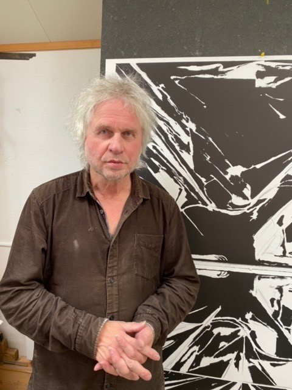
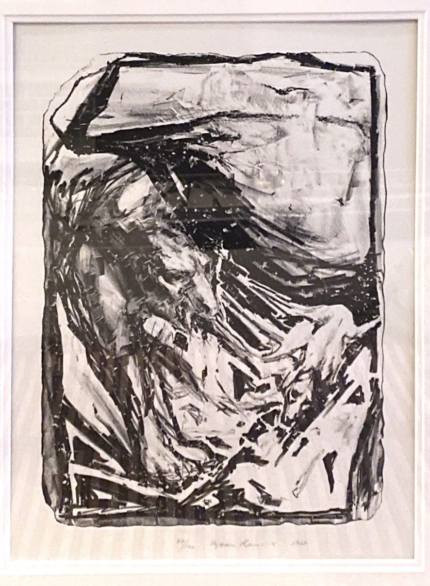
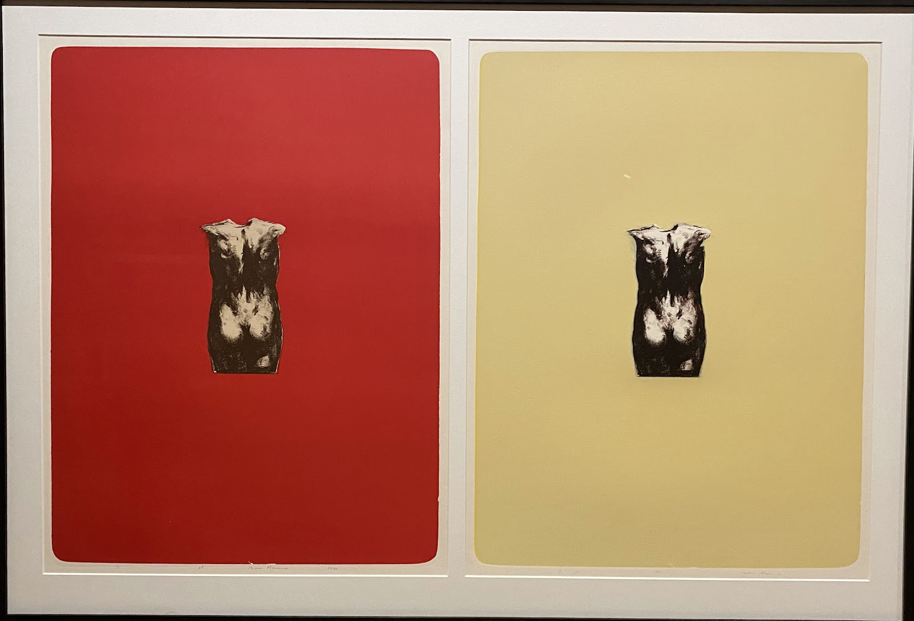
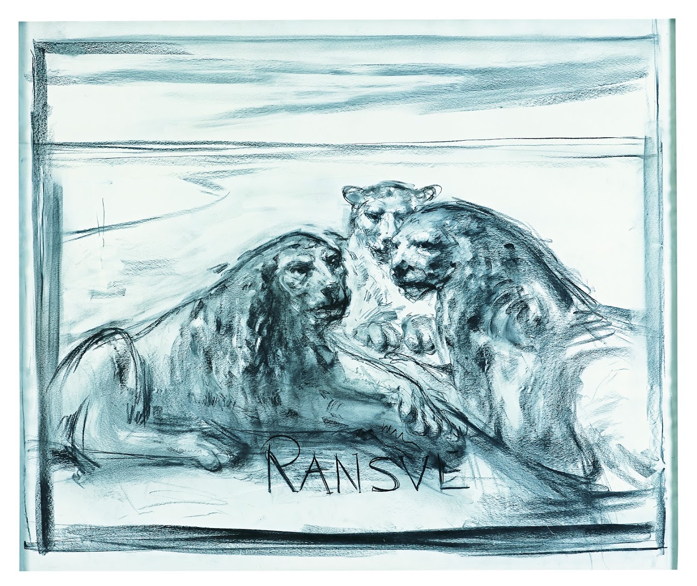
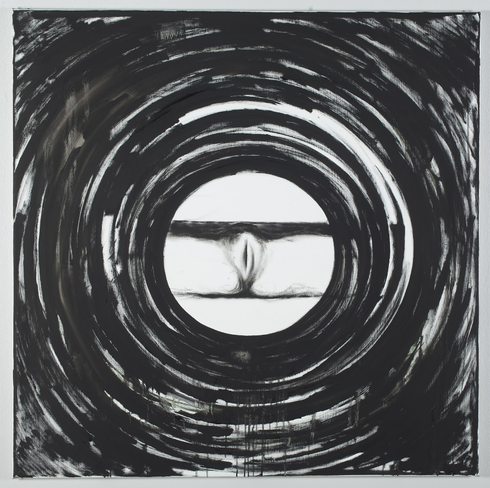
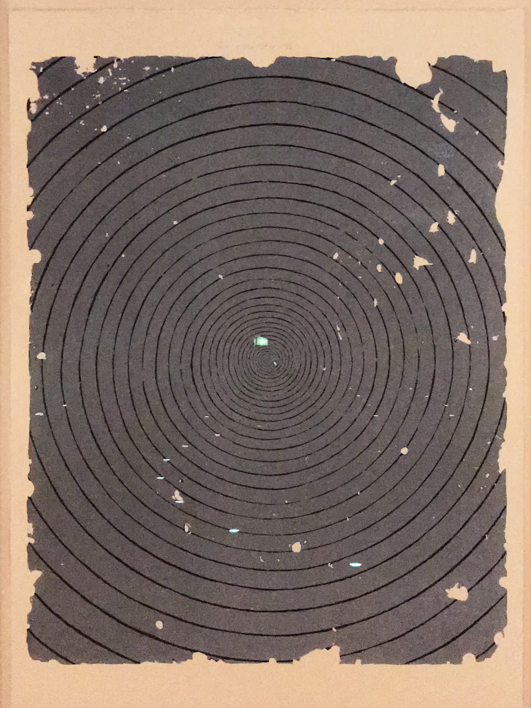
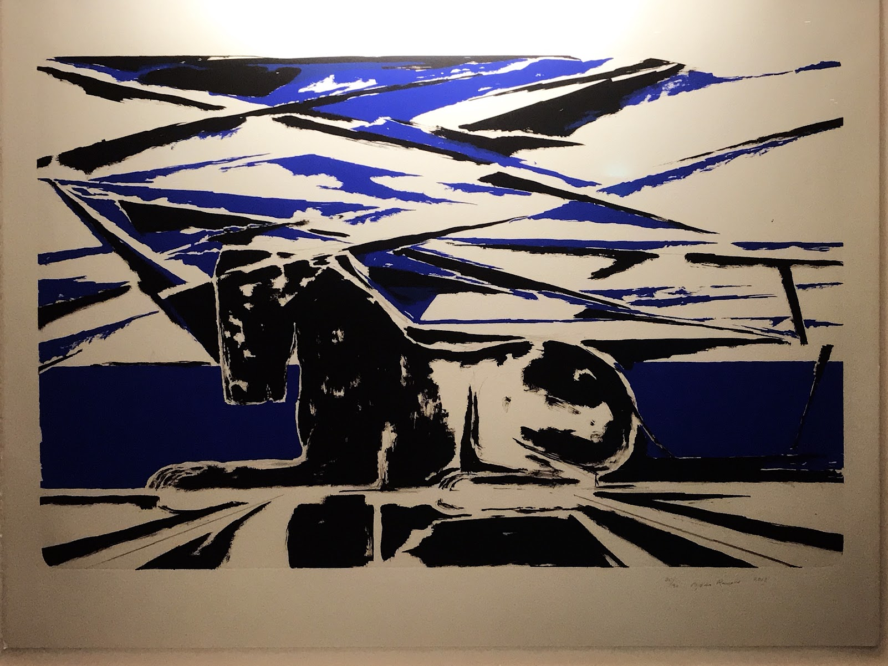

Debuterte med tegninger og litografier i 1968. Siden da: 616 malerier, 1 391 tegninger og 1 277 grafiske blad, katalogisert i tre bind fra Arnoldsche Art Publishers. Under følger et utvalg, ordnet etter tiår.







Hvert tiår har sin egen retning — fra torsoene i 1970 til de svarte bildene i 1990. Bla gjennom for å se hva som skjedde, og når.
120 litografier av en torso sett bakfra, med bare små variasjoner. Vist i Galleri 27, januar 1970.
Aper og harlekiner. Omdiskutert i Bergen Kunstforening, vist videre i Helsinki.
Tre etasjer i gamle Wang Kunsthandel, første utstilling helt uten figurer. Noen ble sinte. Museet kjøpte.
Kobolt og svart. Forarbeid til boken RANSVE — Grafikk 1963–2013.
Prøv videre: "gjør 1a til gallerisiden også" · "kombiner ansikts-sporet fra 1c med panelene i 1b" · "vis Om-siden basert på en av disse" · "dekk flere tiår i 1b"